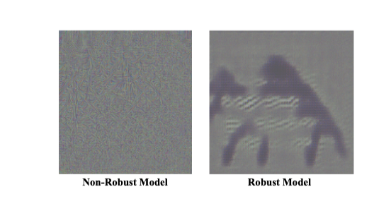

Benign Adversarial Attack: Tricking Algorithm for Goodness
Introduction
Due to the critical risk to machine learning algorithms, adversarial attack has been viewed as malignant in default, which naturally gives rise to the considerable attention on defense against adversarial examples. Beyond falling into this cat-and-mouse game, this paper attempts to provide alternative perspective to consider adversarial example and explore whether we can exploit it in other-than-malignant applications.
The main contributions are summarized as follows:
- We provide alternative perspective to view adversarial example under a novel taxonomy of visual information along task-relevance and semantic-orientation. The emergence of adversarial example is attributed to algorithm’s utilization of task-relevant non-semantic information.
- We present brave new idea called benign adversarial attack to exploit the adversarial examples for goodness. Three potential research directions are positioned with justification experiments and prototype applications.
ADVERSARIAL EXAMPLE: EXPLOITING THE DIFFERENCE BETWEEN HUMAN AND ALGORITHM
Human v.s. Algorithm: Information Taxonomy along Task-relevance and Semantic-orientation
To better investigate how human and machine learning algorithms make inference, we propose the following two criterion to discriminate the different visual information:
- Task-relevance measures whether the information is intrinsic to solve the task. Task-relevant information employed by machine learning algorithms is also called task-relevant feature, whose judgment can resort to whether it is generalizable to unseen data.
- Semantic-orientation measures whether the information is perceptible to human. Semantic-oriented information like color, shape and contour is easily perceived and understood by human to make inference. On the contrary, human usually fails to capture or understand the non-semantic information, such as white noise, adversarial perturbation.
The above two criterion lead to a taxonomy to divide visual information into the following four categories (illustrated in Fig. 1):
- Task-relevant semantic information: semantic information that generalizes to unseen data. This category of information is perceptible to human as well as intrinsic to solve the target task. Examples of task-relevant semantic information in image classification are shape, contour, etc.
- Task-relevant non-semantic information: snon-semantic information that generalizes to unseen data. This category of information is also intrinsic to solve the target task but imperceptible to human. Adversarial perturbation falls in this very category.
- Task-irrelevant semantic information: semantic information that fails to generalize to unseen data. This category of information is perceptible to human, but not useful to solve the target task. Algorithm employing task-irrelevant semantic information tends to suffer from the overfitting problem [16], e.g., the background information in image object recognition tasks.
- Task-irrelevant non-semantic information: non-semantic information that fails to generalize to unseen data. This category of information is neither perceptible to human or intrinsic to solve the target task, e.g., Gaussian white noise, salt and pepper noise.
Adversarial Example v.s. Task-relevant Non-semantic Information
we are interested in the following three characteristics to motivate exploitation that the existence of adversarial example proves that algorithms indeed employ non-semantic information as features:
- Exclusive to algorithm: Solving tasks involves with both semantic and non-semantic information. While machine learning algorithms can utilize both, human relies mostly on the semantic part. This is the fundamental characteristics to distinguish between human and algorithm.
- Reflecting common weakness: Equipping with this “superman’s power”, machine learning algorithms at the same time suffer from common weakness as easily fooled by trivial perturbation. This is particularly the case in tasks heavily interacted with human.
- Utilizable as features: Classical machine learning focuses on employing the semantic features. Since it is difficult to completely prevent the algorithm from employing the nonsemantic information, how about we proactively exploit it to assist task solving especially in cases like data shortage?
EXPLOITING ADVERSARIAL ATTACK FOR BENIGN APPLICATIONS
1.Adversarial Turing Test
A. Visualization of task-relevant non-semantic information.
B. Different sensitivities to visual distortions between human and algorithm.
Prototype Application and Discussion.
We have implemented a prototype application by employing adversarially perturbed images to improve character-based CAPTCHAs, which is called robust CAPTCHAs.
Future direction：With the tendency that traditional Turing test being cracked by machine learning algorithms, researchers are continuously exploring alternative solutions. As the exclusive information of the algorithm, task-relevant non-semantic information is justified via the above analysis and prototype application for its feasibility in distinguishing between human and algorithm. We hope this study can shed light on the future studies on exploiting adversarial examples to design novel Turing tests. Moreover, besides the standard forms of Turing test, we envision the increasing necessity of generalized Turing test to distinguish between human and algorithm in the future. In particular, the widespread application of machine learning algorithms in data synthesis and automated data annotation is giving rise to a considerable amount of algorithm-generated data in the wild. We believe the utilization of non-semantic information inevitably leaves traces in the generated data, which provides possible solution to identify the algorithm-generated data by carefully examining its reaction to adversarial perturbation.
2.Rejecting malicious algorithm
A. Results of Attacking Malicious Face Recognition Algorithms
B. Attacking Results on Resistance against Image Compression
C. Attacking Results on Compatibility with Facial Makeup

Prototype Application and Discussion.
prototype application employing adversarial attack to rejecting malicious face recognition algorithms is implemented.
Future direction: Justified by the above analysis and inspired by the prototype application, we expect two productive directions of exploiting adversarial attack to reject malicious algorithms: (1) optimizing the procedure of generating adversarial examples by addressing practical requirements (e.g., non-accessibility in our application) and invaliding key modules to reject the malicious algorithm (e.g., face detection module in face identification system); and (2) applying benign adversarial attacks in other scenarios of privacy-preserving (e.g., personal identity in surveillance video and phone call) and novel applications of information hiding (e.g., sensitive information in documentation).
3.Adversarial data augmentation
A. Adversarial Attack provides Strong Feature
B. Adversarial Attack provides Generalizable Feature

C. Adversarial Attack provides Complementary Feature
Prototype Application and Discussion.
By utilizing adversarial examples for data augmentation, we implemented a prototype application to solve the algorithm bias problem.Future direction: Researchers are generally utilizing data augmentation to improve the generalization of machine learning models caused by data shortage. Through the above experiments and analysis, we demonstrated that expanding training dataset by adversarial examples is an effective means of data augmentation. While traditional data augmentation can be viewed as exploiting human-consistent prior knowledge to make up for the data shortage, adversarial attack provides a new sight of prior knowledge which is imperceptible to human. We argue that the capability of employing non-semantic information contributes much to the rapid progress of today’s machine learning algorithms. However, few work has proactively examined how to exploit it in benign applications. It remains unexplored in many perspectives before integrating the non-semantic and semantic features, e.g., in what cases the algorithms are likely to extract non-semantic features for practical usage, how to extract and better employ the non-semantic features, what are the pros and cons of employing non-semantic features, etc.
Paper
https://arxiv.org/pdf/2107.11986.pdf